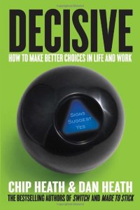
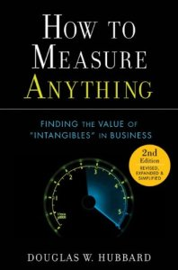
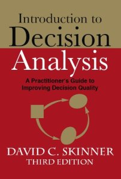
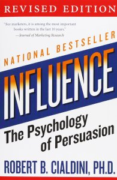
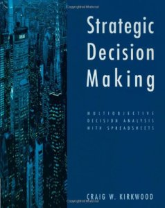
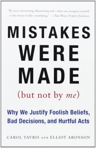

Knowledge Content Library
170
Advances in Decision Analysis: From Foundations to Applications

by Ward Edwards, Ralph F. Miles, Jr. and Detlof von Winterfeldt
Covers the broad scope of decision analysis at an advanced level.
Covers the broad scope of decision analysis at an advanced level.
continue to: amazon.com
365
Decisions with Multiple Objectives: Preferences and Value Tradeoffs
by Ralph Keeney and Howard Raiffa
The classic text laying out the axiomatic foundations for multiattribute utility approaches.
The classic text laying out the axiomatic foundations for multiattribute utility approaches.
continue to: amazon.com
171
Decisive: How to Make Better Choices in Life and Work

by Chip Heath and Dan Heath
Chip Heath takes off from where Daniel Kahneman left off in Thinking Fast and Slow and offers solutions to work with our biases and not let them misguide us.
Chip Heath takes off from where Daniel Kahneman left off in Thinking Fast and Slow and offers solutions to work with our biases and not let them misguide us.
continue to: amazon.com
172
How to Measure Anything: Finding the Value of Intangibles in Business

by Douglas W. Hubbard
This math best-seller argues that most individuals can be trained to assess calibrated probabilities and presents a procedure for evaluating quantities in a decision analytically consistent way.
This math best-seller argues that most individuals can be trained to assess calibrated probabilities and presents a procedure for evaluating quantities in a decision analytically consistent way.
continue to: amazon.com
173
The Failure of Risk Management: Why It's Broken and How to Fix It
by Douglas W. Hubbard
An essential guide to the calibrated risk analysis approach.
An essential guide to the calibrated risk analysis approach.
continue to: amazon.com
174
Introduction to Decision Analysis: A Practitioner's Guide to Improving Decision Quality

by David C. Skinner
Excellent resource for managers, technical professionals, and decision analysts, regardless of experience level with decision analysis.
Excellent resource for managers, technical professionals, and decision analysts, regardless of experience level with decision analysis.
continue to: amazon.com
175
Judgment Under Uncertainty: Heuristics and Biases

by Daniel Kahneman, Paul Slovic, Amos Tversky
A collection of classic articles on this important subject.
A collection of classic articles on this important subject.
continue to: amazon.com
176
The Black Swan: The Impact of the Highly Improbable
by Nassim Nicholas Taleb
With a new section: On Robustness and Fragility.
With a new section: On Robustness and Fragility.
continue to: amazon.com
178
Influence: The Psychology of Persuasion

by Robert. B. Cialdini
Influence, the classic book on persuasion, explains the psychology of why people say "yes"—and how to apply these understandings.
Influence, the classic book on persuasion, explains the psychology of why people say "yes"—and how to apply these understandings.
continue to: amazon.com
179
Nudge: Improving Decisions About Health, Wealth, and Happiness
by Richard Thaler and Cass Sunstein
A revelatory new look at how we make decisions.
A revelatory new look at how we make decisions.
continue to: amazon.com
180
Strategic Decision Making: Multiobjective Decision Analysis with Spreadsheets

by Craig W. Kirkwood
Uses spreadsheets and other analytical tools in considering important tradeoffs in multiobjective problems.
Uses spreadsheets and other analytical tools in considering important tradeoffs in multiobjective problems.
continue to: amazon.com
181
How We Decide
by Jonah Lehrer
The first book to use the unexpected discoveries of neuroscience to help us make the best decisions.
The first book to use the unexpected discoveries of neuroscience to help us make the best decisions.
continue to: amazon.com
182
Fooled by Randomness: The Hidden Role of Chance in Life and in the Markets
by Nassim Nicholas Taleb
Taleb's first book, introducing "decision making under opacity", a protocol on how we should live in a world we don't understand.
Taleb's first book, introducing "decision making under opacity", a protocol on how we should live in a world we don't understand.
continue to: amazon.com
183
Mistakes Were Made (But Not by Me)

by Carol Tavris and Elliott Aronson
Why We Justify Foolish Beliefs, Bad Decisions, and Hurtful Acts.
Why We Justify Foolish Beliefs, Bad Decisions, and Hurtful Acts.
continue to: amazon.com
185
Switch: How to Change Things When Change Is Hard
by Chip Heath and Dan Heath
A game plan available to everyone on how to make the hard changes in life a little bit easier.
A game plan available to everyone on how to make the hard changes in life a little bit easier.
continue to: amazon.com
184
Antifragile: Things That Gain from Disorder
by Nassim Nicholas Taleb
Some readers will find Taleb's brashness off-putting; others will embrace it as a charismatic component of the ideas themselves.
Some readers will find Taleb's brashness off-putting; others will embrace it as a charismatic component of the ideas themselves.
continue to: amazon.com
186
The Art of Strategy: A Game Theorist's Guide to Success in Business and Life

by Avinash Dixit and Barry Nalebuff
A highly accessible coverage of game theory.
A highly accessible coverage of game theory.
continue to: amazon.com
187
A Course in Microeconomic Theory

by David M. Kreps
Placing unusual emphasis on modern noncooperative game theory, it provides a unified treatment of modern microeconomic theory.
Placing unusual emphasis on modern noncooperative game theory, it provides a unified treatment of modern microeconomic theory.
continue to: amazon.com
188
Economic Evaluations and Investment Decision Methods

by John M. Stermole and Franklin J. Stermole
Introduction to the concepts of time value of money and the related decision criteria used to evaluate investments.
Introduction to the concepts of time value of money and the related decision criteria used to evaluate investments.
continue to: amazon.com
191
Game Theory and Strategy
by Philip D. Straffin
Applications of game theory in a wide variety of disciplines.
Applications of game theory in a wide variety of disciplines.
continue to: amazon.com